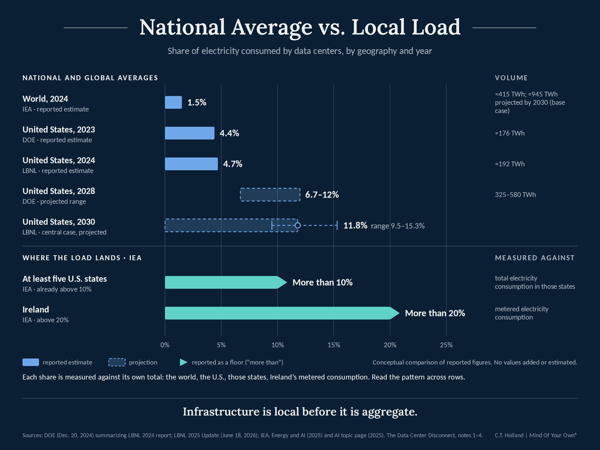
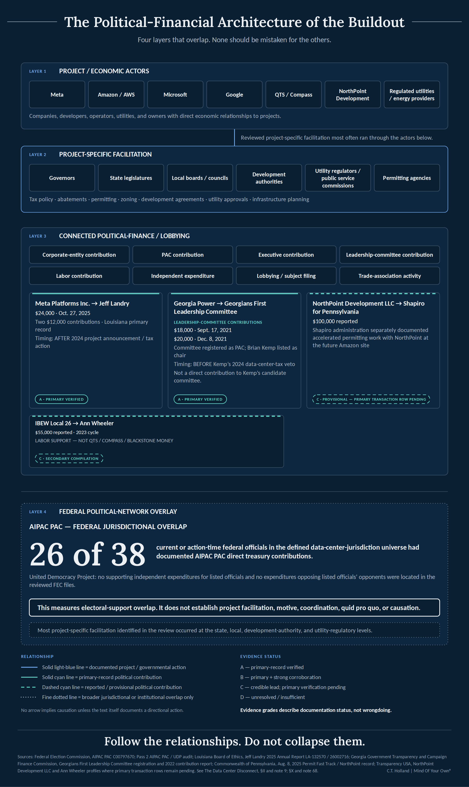
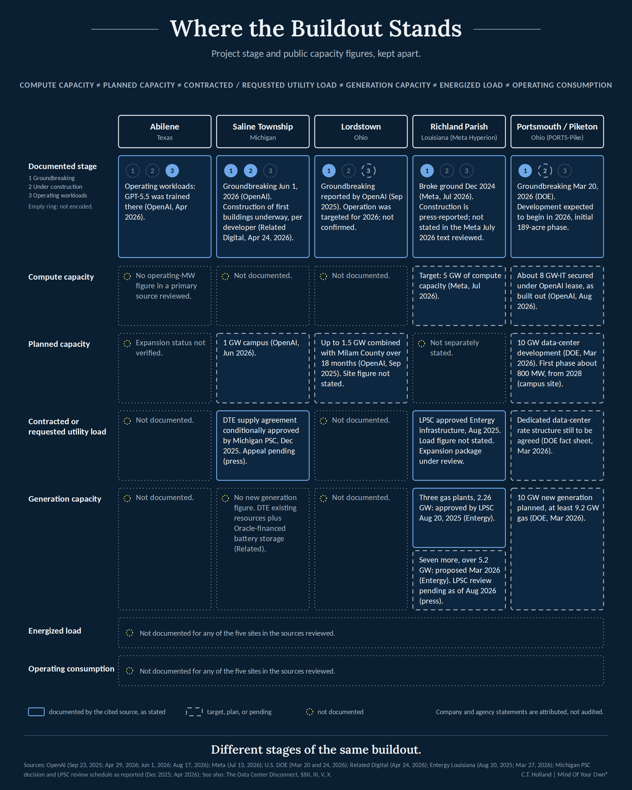
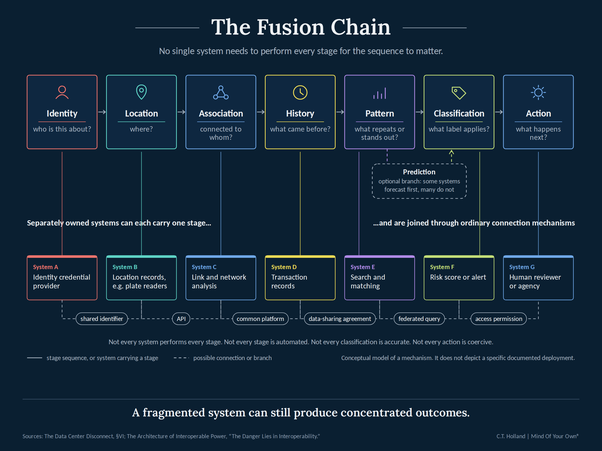
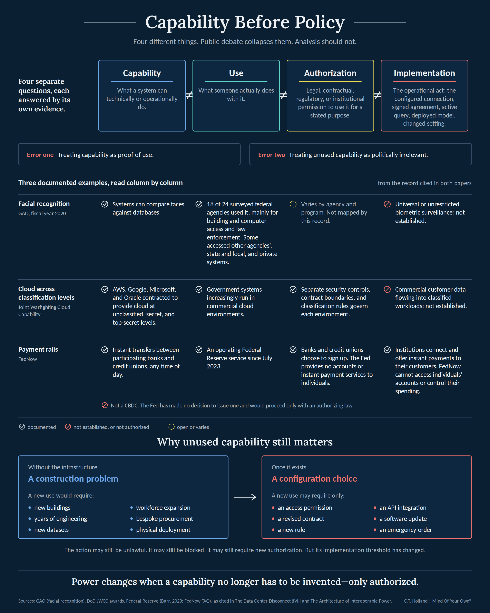
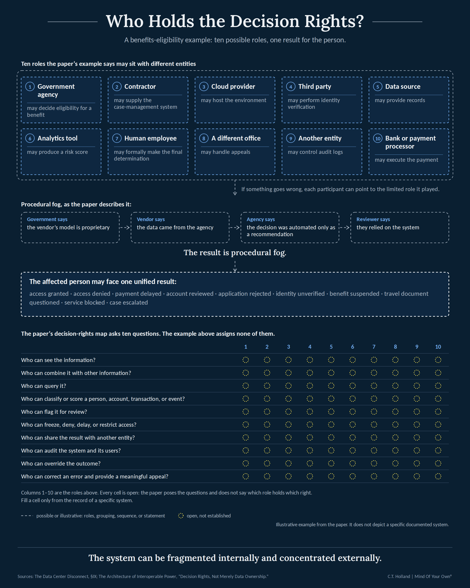

Opening — AI Has a Body
Artificial intelligence is usually presented to the public as a feature.
It appears in a browser window, a phone application, a customer-service interface, a workplace subscription, a search engine, or a prompt box asking what you would like help with today. It speaks in sentences. It generates images. It summarizes documents. It can be switched on or off with a click. In public conversation, AI often has no geography. It seems to live nowhere in particular.
But AI has a body.
That body is land assembled near fiber routes and electrical substations. It is high-voltage transmission capacity, generators, cooling systems, water contracts, backup diesel, gas turbines, power-purchase agreements, transformer orders, construction crews, semiconductor supply chains, security perimeters, tax arrangements, network equipment, and buildings designed to house rows of machines that may each draw more power than earlier generations of computing infrastructure could have imagined.
The visible product may be a chatbot. The underlying industrial project is a new layer of physical and institutional capacity.
The scale is no longer speculative. The U.S. Department of Energy (DOE) reported that American data centers consumed approximately 176 terawatt-hours of electricity in 2023—about 4.4 percent of total U.S. electricity consumption—and projected a range of 325 to 580 terawatt-hours by 2028, or roughly 6.7 to 12 percent of national electricity use. Put more plainly: in 2023, data centers used roughly one out of every 23 units of electricity consumed in the United States. By 2028, DOE’s projected range would put that somewhere between about one in 15 and one in eight. The report attributes the reversal of a long period of relatively flat data-center energy use to new types of hardware and expanding services, including AI.1
A later Lawrence Berkeley National Laboratory (LBNL) update estimated that U.S. data centers consumed about 192 terawatt-hours in 2024, or 4.7 percent of total U.S. electricity use, and could account for 11.8 percent by 2030 in its central case; its scenario range runs from 9.5 percent to 15.3 percent.2 Put plainly, the U.S. share is projected to rise from roughly one in 23 units of electricity in 2023 to nearly one in eight by 2030—close to tripling in seven years. At the global level, the International Energy Agency estimates that data centers used about 415 terawatt-hours in 2024—about 1.5 percent of worldwide electricity consumption—and projects roughly 945 terawatt-hours by 2030 in its base case.3 That is more than a doubling of global data-center electricity use in six years.
Those national and global numbers are useful, but they can also conceal the central political fact: infrastructure is local before it is aggregate. A country can absorb a percentage point of new demand across a continental grid on paper. A county, municipality, watershed, or transmission zone experiences a specific set of substations, construction sites, noise sources, land purchases, tax agreements, rate cases, and planning decisions. The International Energy Agency (IEA) notes that data centers are unusually spatially concentrated; in at least five U.S. states, they have already surpassed 10 percent of total electricity consumption, while in Ireland they account for more than 20 percent of metered electricity consumption.4
The question raised by this expansion is therefore not merely whether artificial intelligence will be useful, profitable, or dangerous. It is more concrete.
What is being built, in what sequence, at what scale, through which relationships, with what public and private incentives—and what becomes possible once the pieces exist together?
That question does not require a hidden master plan. It does not assume that every data center, payment rail, identity system, federal cloud contract, or analytics platform belongs to one coordinated project. The record does not support that conclusion. The disconnect lies elsewhere.
The disconnect is the gap between the scale and consequence of what is being built and the fragmented way its costs, purposes, dependencies, and future uses are presented to the public. The debacle is the underlying possibility that these separate systems—compute, identity, finance, surveillance, public administration, and private technical infrastructure—are becoming interoperable enough to function as a control architecture before the public has meaningfully understood, debated, or governed the whole.
The inquiry does require attention to something more ordinary and, in some ways, more consequential: modern power can accumulate through separate decisions that appear administratively routine when viewed one at a time. A zoning approval can be local. A utility upgrade can be technical. A cloud procurement can be a procurement matter. A digital-identity standard can be a security measure. A bank’s compliance system can be a private business process. A data-integration platform can be a software deployment. A payment network can be an efficiency improvement. This paper intends to connect the dots of seemingly disparate points.
Each may have a legitimate and limited purpose. Each may be subject to different rules, different agencies, different contractual restrictions, and different public debates. Yet the practical effect of infrastructure does not depend only on the intention announced at the moment one component is approved. It also depends on whether the components later become compatible, accessible, and governable across institutional boundaries.
The public is often invited to debate individual uses of AI, data systems, identity tools, payment networks, or surveillance technologies while the capacities that make those uses easier are financed, built, standardized, and normalized in advance.
The argument here is not that capacity proves potential future use (or abuse). Capability is not authorization; authorization is not implementation; implementation is not proof that a particular outcome will occur. Those distinctions matter. They are the boundary between investigation and projection. Yet, the questions still remain. The scale and speed at which data centers and the technology they house are being built remain poorly understood.
Unused capability must still be considered, because it changes what becomes possible later. A road, a port, a database, a payment network, a high-voltage line, a cloud region, or a common identity standard changes the future before anyone decides how fully to use it. It reduces some costs, eliminates some technical barriers, creates dependencies, introduces new default vendors, and shifts practical power toward entities that operate the infrastructure. The future becomes easier to impose when its infrastructure is already waiting.
This paper follows the record outward from the data center: from the industrial demands of compute, to finance and public incentives, to questions of demand, secrecy, public-private dependency, interoperability, identity and financial rails, and finally the decision rights distributed across systems that increasingly shape ordinary life.
Its purpose is not to manufacture certainty from adjacency. It is to preserve the anomaly where it remains unresolved, mark the boundary of proof where evidence stops, and ask the questions the evidence has earned.
I. The Physical Disconnect
A data center is often described as a building full of servers. That phrase is technically true and politically inadequate.
At the scale now being proposed and constructed, the “building” is only the visible shell around a system of dependencies: power generation, fuel supply, transmission, distribution, substations, switchgear, transformers, water or other cooling capacity, fiber connectivity, specialized electrical equipment, land-use permissions, transportation access, and a labor force capable of constructing and maintaining highly engineered facilities.
The public sees an announcement, a rendering, perhaps an estimate or promise of jobs and investment in the community. The grid sees a new large load. The local government sees a development application. The developer sees a long-lived asset. The utility sees an interconnection problem. The financial system sees contracted revenue, collateral, and a stream of expected payments. Each view is partial. The full physical picture is usually dispersed among filings, permits, utility studies, tax records, local planning documents, environmental reviews, and company statements.
Electricity is the most immediate constraint. The Department of Energy’s 2024 analysis estimated that data-center electricity consumption in the United States rose from 58 terawatt-hours in 2014 to 176 terawatt-hours in 2023. Its projected 2028 range—325 to 580 terawatt-hours—was not a prediction that every announced project would be completed or fully utilized. It was a scenario-based estimate built from data-center deployment trends, server shipments, efficiency assumptions, and expected changes in computing demand.5
The range itself is revealing. It captures a basic uncertainty that public arguments often flatten: the country may not know precisely how much data-center demand will materialize, but utilities, developers, landowners, equipment suppliers, and governments must make decisions long before the uncertainty is resolved. Transmission lines and substations cannot be conjured after a facility needs them. Large transformers have long lead times. Generation projects require siting, permits, fuel arrangements, financing, and construction. The physical system must anticipate demand in order to serve it.
The infrastructure buildout cannot be understood simply as the electricity cost of ordinary people typing prompts into chatbots. It is being built for a much wider computational economy: frontier-model training, large-scale inference, enterprise deployment, application programming interfaces (APIs), reasoning systems, agents, video generation, government use, and future applications that are more computationally intensive than today’s everyday text interactions. For most ordinary businesses, even substantial digital operations require only a fraction of the power associated with hyperscale or AI-oriented data-center campuses; the scale of the infrastructure now being built therefore points well beyond routine commercial computing.
That anticipation creates a form of commitment. Once land is acquired, a transmission corridor is planned, a substation is expanded, a utility allocates capacity, and local governments structure incentives around a project, the relevant institutions have reasons to prefer completion over reconsideration. The project is no longer only an idea. It becomes a set of sunk costs, legal obligations, planning assumptions, and political promises that make one inquire… to what end.
The IEA has emphasized the difference between national averages and local effects. It notes that large data centers can consume electricity on a scale comparable to an electric-arc-furnace steel mill, but are generally more spatially concentrated than comparable industrial loads.6 This is one reason a national statement such as “data centers use only a few percent of electricity” can be both accurate and misleading. The grid is not experienced as a national average. It is experienced through local capacity limits, transmission constraints, interconnection queues, wholesale-market effects, reliability planning, and retail bills.
In Northern Virginia, for example, the concentration did not emerge by accident. Virginia’s Joint Legislative Audit and Review Commission (JLARC) identifies multiple contributing factors: a strong fiber network, reliable and comparatively inexpensive electricity, available land, proximity to major national customers, and the state’s data-center tax incentive.7 Those conditions form an ecosystem. Fiber attracts network-dependent users; data-center density attracts adjacent services; utility infrastructure becomes more valuable because it already exists; tax treatment improves project economics; specialized labor and contractors develop around repeated construction.
That ecosystem is commercially rational. It can also create a feedback loop in which prior development becomes an argument for more development. Existing infrastructure reduces the incremental cost of the next project. Existing customers justify further grid investments. Existing tax policy becomes difficult to alter because firms and localities organize expectations around it. The cluster begins to function as a regional dependency.

Electricity is not the only physical question. Cooling can require significant water, depending on facility design, climate, and operating conditions. Some facilities use evaporative cooling; others use air-based systems, closed-loop designs, recycled water, or combinations of approaches. These differences matter. A claim about “data-center water use” made without identifying the cooling technology, location, water source, seasonal conditions, and accounting method is often too broad to be useful.
The environmental question extends beyond water. Data-center growth is also a power-system decision: new loads can shape generation choices, transmission planning, permitting priorities, and the pace at which energy infrastructure is built. The issue is therefore not simply how much electricity data centers require, but what kind of energy system is being built around them—and which environmental costs are treated as acceptable in the race to scale.
The acceleration is explicit federal policy. The July 2025 America’s AI Action Plan calls for streamlined permitting for data centers, semiconductor facilities, and the energy infrastructure that supports them. Executive Order 14318, issued the same day, directs agencies to facilitate rapid data-center buildout, identify federal land and resources for development, and consider financial support for qualifying projects, including loans, grants, tax incentives, and offtake agreements.8
The same caution applies to generation. Data centers may contract for renewable energy, draw from grids with varying generation mixes, rely on backup generators, pursue on-site generation, or support new gas, nuclear, solar, storage, or transmission investments depending on location and market structure. The IEA projects that renewables will meet nearly half of the growth in global data-center electricity demand through 2030 in its base case, while natural gas, coal, and eventually more nuclear generation also contribute depending on region.9 That finding complicates simple claims in both directions. It is not accurate to say data-center growth automatically means one specific fuel source. It is equally incomplete to cite renewable contracts as though they erase every grid, land, water, reliability, and local-cost question.
The industrial supply chain extends well beyond power. AI-oriented facilities require advanced accelerators, networking equipment, memory, storage, power electronics, racks, cooling systems, backup equipment, and extensive fiber connectivity. The physical concentration of those systems changes the geography of computing. A user may interact with an AI tool from a laptop in New York, a school in Ohio, an office in California, or a phone in rural America. The computation may occur hundreds or thousands of miles away in facilities whose host communities bear the immediate burdens and receive the negotiated benefits.
This division of experience matters democratically. The people using an AI product and the people living beside the power infrastructure are often not the same people. The firm selling the product may not own all of the physical assets. The utility serving the site may be regulated by one authority; the tax incentive may be issued by another; the land-use decision may belong to a county; the cloud workload may serve customers elsewhere; and the ultimate economic benefits may accrue to shareholders located anywhere.
A data center, then, is not merely a private building. It is a node where public systems and private balance sheets meet. It consumes a publicly regulated resource. It may require publicly authorized infrastructure. It often depends on local planning decisions. Its revenues may derive from global customers. Its effects may appear in regional electric planning for decades.
This does not mean every project should be stopped. It means the description of the project should be proportionate to its actual footprint. This paper follows the footprint beyond the project boundary—into the energy, water, capital, data, infrastructure, and policy systems that make it possible.
The questions follow:
When a facility’s demand requires new generation, transmission, substations, or distribution upgrades, who pays for each part—and who decides the allocation? If a project is approved in phases, at what point should the public evaluate the whole expected load rather than only the first increment? If a community receives a data center’s tax base but bears a constrained grid, altered land use, water demand, or accelerated infrastructure buildout, what counts as informed consent? And once the physical commitments are in place, how much practical freedom remains to reconsider the project’s eventual scale?
That question becomes more consequential when the first approval does not reveal the eventual scale. As the cases examined in Section IV show, data-center projects have been advanced under code names, nondisclosure agreements, phased approvals, and incomplete public descriptions that can leave residents evaluating only part of what may ultimately be built. Once land, substations, transmission, water access, tax agreements, and other enabling infrastructure are in place, later expansion can become easier than the original approval. The first footprint may therefore matter less as an endpoint than as a foothold. Once a foothold is established, who is responsible for tracking the footprint as it grows?
II. The Economic Disconnect
The physical buildout is visible enough to provoke public debate. The capital structure behind it is often less visible, even though financing arrangements can determine who bears risk when forecasts prove correct, incomplete, or wrong.
The contemporary AI-infrastructure buildout is not financed through one model. Hyperscalers build and own facilities. Cloud companies lease capacity from specialized data-center operators. Developers use project finance, corporate debt, private credit, joint ventures, real-estate structures, and infrastructure funds. Utilities invest in grid upgrades through regulated capital programs. States and localities provide tax abatements, sales-tax exemptions, land arrangements, expedited processes, and other incentives. Insurers, lenders, pension-linked capital, and private-equity vehicles can participate indirectly through property, debt, equipment, or infrastructure holdings.
The distribution of risk is not uniform. Private investors may bear construction, lease, utilization, and financing risk, but communities can bear something more immediate: higher utility bills, pressure on water and land, new transmission lines and substations, tax concessions, construction disruption, environmental burdens, and long-term infrastructure commitments shaped around private demand forecasts. The relevant question is not whether private capital faces risk. It is who absorbs the consequences when the bet is wrong, who lives with the physical footprint when it is right, and how much say the people carrying those consequences had before the commitments were made.
The scale of private spending is undeniable. Microsoft’s fiscal 2025 annual report states that the company opened new data centers across six continents and operates more than 400 data centers in 70 regions. It also states that the company expects to continue capital expenditures supporting cloud growth and AI infrastructure and training.10 That language is broad, but it establishes an important fact: cloud and AI capacity are not marginal side projects for the largest technology firms. They are core capital commitments.
The economic logic is understandable. Cloud providers sell computing, storage, networking, software, and increasingly AI services. They compete for enterprise customers, government contracts, developers, and model providers. Capacity constraints can mean foregone revenue. Owning or securing data-center capacity can create strategic advantages, including geographic reach, security certifications, service reliability, and bargaining power over customers who have built applications around a provider’s platform.
But the same logic produces a financing race. If a company believes that AI workloads will become central to search, software, customer service, advertising, coding, scientific work, defense applications, logistics, media, or enterprise operations, then delay can appear more dangerous than overbuilding. A facility that looks excessive in the short term may be rational if the company expects its capacity to become scarce later. Conversely, a facility built against overly optimistic demand assumptions can become a costly asset whose returns depend on keeping utilization high, renegotiating contracts, or finding new workloads.
This is where the economic disconnect becomes harder to ignore. The infrastructure race is being financed on expectations of future AI demand that remain far larger than the revenue the industry has yet demonstrated. Analysts and investors have repeatedly questioned whether end-user AI revenue can rise fast enough to justify the hundreds of billions of dollars being committed to chips, data centers, power, and transmission. Sequoia Capital framed the problem bluntly in 2024 as a “$600 billion question”: where is the revenue required to support the infrastructure buildout?11 The gap has narrowed in some areas as AI adoption and cloud revenues have grown, but the underlying question remains unresolved. If demand continues compounding, today’s excess capacity may look prescient. If it does not, the industry may be building physical assets faster than the economics can support them.
The central question is not whether AI demand is real. It is whether the scale of infrastructure being built is proportionate to demonstrated demand—or to expectations about a future that has not yet arrived.
The scale should not be mistaken for a fixed technological requirement. China provides an imperfect counterexample. Its computing infrastructure is more centrally coordinated, while U.S. restrictions on advanced computing semiconductors have constrained Chinese access to leading hardware. DeepSeek-V3 demonstrated that model capability can be pursued through architectural and software efficiency as well as hardware scale. China has also confronted uneven utilization and official concern about blind or disorderly construction. The comparison does not establish that China has discovered a cheap alternative to American infrastructure. It raises a more useful question: how much of the American buildout is required by the technology itself, and how much is being produced by competition among firms racing to secure proprietary capacity before their rivals do?12
The contradiction is structural. The executives building frontier AI can sincerely warn that capability is advancing faster than society can safely absorb while remaining embedded in an economic system that rewards continued acceleration. AI laboratories depend on enormous quantities of compute. Cloud providers and chipmakers invest in or partner with those laboratories. The laboratories, in turn, make enormous multiyear commitments to purchase the infrastructure those partners provide. Those contracts become evidence of future demand, helping justify still more data centers, chips, power procurement, and financing. Expansion can therefore become self-reinforcing before anyone has demonstrated what level of durable end-user demand will ultimately support the physical system being constructed.
The financial loop does not remain on a spreadsheet. Its assumptions are translated into land acquisitions, substations, transmission lines, generation projects, water demand, tax concessions, and utility commitments that communities may live with for decades. If projected demand proves correct, the infrastructure reshapes those communities. If it does not, the infrastructure and its costs do not simply disappear.
Anthropic makes the tension unusually visible. In September 2026, chief executive Dario Amodei argued that frontier AI capability should advance more slowly so that safety work could keep pace. Yet Anthropic is simultaneously scaling at extraordinary speed: in April 2026 it committed more than $100 billion over ten years to Amazon Web Services (AWS) technologies for up to five gigawatts of new compute, while Amazon announced another $5 billion investment in Anthropic with as much as $20 billion more possible, on top of $8 billion already invested. Anthropic has also been moving toward the public markets. The significance is not that Amodei’s warnings are necessarily insincere. It is that recognizing the danger does not remove the commercial machinery driving acceleration.13
How much of today’s infrastructure demand reflects durable end-user economics, and how much reflects a recursive financing system in which investment creates contracts, contracts justify infrastructure, infrastructure validates valuations, and valuations attract further investment?
That is where public systems enter.
Virginia’s tax treatment offers a documented example of how policy can materially change project economics. JLARC states that the Commonwealth’s retail sales-and-use-tax exemption has helped attract large-scale data centers, alongside fiber, power, land, and market proximity.14 The incentive can reduce the effective cost of servers and other qualifying equipment, which is consequential in a capital-intensive industry where equipment refresh cycles are expensive.
A tax exemption is not automatically an improper subsidy. Legislatures can reasonably decide that attracting investment, property-tax revenue, construction activity, and associated services justifies a foregone tax stream. The question is whether the public receives a clear account of the trade: what is being waived, for whom, for how long, under what performance conditions, and with what measurable benefits.
Communities can be blindsided. Major data-center projects have been negotiated under nondisclosure agreements, code names, confidential briefings, and other arrangements that can leave residents learning about the scale, tax terms, utility demands, or land-use implications only after important decisions are already in motion. The question is therefore not only whether the bargain is favorable, but whether the public had enough information, early enough, to judge the bargain at all.
A tax benefit also creates a political constituency for continued expansion. Once an industry becomes a major regional presence, local governments may compete to retain or attract projects. Local officials may emphasize tax-base gains and construction employment. Critics may emphasize permanent job counts, land consumption, water use, grid impacts, or fiscal opportunity costs. Both sides can cite real facts while using different baselines.
The political-finance review produced a more limited result than the scale of the infrastructure might suggest. Documented project-adjacent contributions in the cases reviewed were generally modest relative to the size of the projects and do not support treating campaign finance as an explanation for the buildout. They do show that project companies, utilities, labor organizations, developers, and political institutions can occupy the same decision environment—and that those relationships are worth documenting without pretending they establish causation.15
That result reinforces rather than interrupts the economic argument: political-finance relationships belong in the map only to the extent they help explain who shaped incentives, approvals, utility decisions, or federal policy. Where they do not establish that connection, they should remain background rather than become a competing theory of the buildout.
Where political influence becomes more concrete is when the path from organized interest to policy can be traced. In Virginia, the Data Center Coalition—whose members include Amazon, Google, Microsoft, and Meta—coordinated a 2026 lobbying campaign around preservation of the state’s data-center sales-tax exemption. Bloomberg Tax reported that industry lobbyists proposed a new electricity-consumption tax as part of a bargain to retain the exemption. The final biennial budget retained the exemption for the biennium and imposed a 1.1-cent-per-kilowatt-hour tax capped at $600 million annually, with excess revenue refunded pro rata; the coalition publicly criticized the final package. The coalition’s 2024 tax filing reported $1.6 million in combined lobbying and political expenditures across its activities, not as the cost of this single campaign.16
In Louisiana, The New York Times reported that Gov. Jeff Landry urged then-Revenue Secretary Richard Nelson to secure passage of a bill as officials worked to secure Meta’s Richland Parish project. Nelson approached the bill’s sponsor, and a measure originally concerning a fiber-optic equipment rebate was repurposed into a data-center equipment rebate sought for the project. The significance is not a claim that lawmakers were purchased. It is a traceable decision path showing that the economics of the buildout are shaped not only by markets, but by organized efforts to change the public rules under which projects become viable. 17

Ratepayer exposure is even more complicated. In a regulated utility system, investments in generation, transmission, and distribution may ultimately be recovered through customer rates depending on the governing tariffs, regulatory decisions, interconnection agreements, and cost-allocation rules. The critical issue is not whether a developer pays anything. Large loads routinely pay direct connection costs, deposits, negotiated charges, or special rates. The issue is whether the broader system is expanded in ways that socialize costs without adequate protections if projected load fails to materialize or if the benefits are concentrated.
In June 2026, the Federal Energy Regulatory Commission (FERC) directed all six regional grid operators to show cause why their tariffs should not be revised to address the integration of large loads, including data centers. The orders reflected concern that existing tariffs may not adequately address the scale and pace of large-load growth, and required the operators to justify their current approaches or propose revisions.18 That action did not establish that ordinary customers are always subsidizing data centers. It established that cost allocation, interconnection, and large-load integration had become active regulatory questions requiring formal review.
This is the point at which the distinction between a private project and a public system becomes difficult to avoid. A data center may be privately financed. But if it requires a publicly regulated utility to reserve capacity, finance upgrades, alter long-range plans, or secure additional generation, private investment is operating within—and potentially reshaping—a system that households and businesses cannot easily leave.
That distinction matters because the costs of serving extraordinary new loads do not always remain with the projects creating them. In regions experiencing rapid data-center growth, utilities and regulators have warned that generation, transmission, and distribution upgrades can raise costs for existing households and businesses, even when those customers have not materially increased their own electricity use. The emerging policy fight is therefore not simply over how much power data centers consume, but over who pays for the infrastructure required to serve them.
Safeguards are possible. Utilities and regulators can require up-front contributions, minimum bills, collateral, exit fees, special contracts, phased interconnection, load-curtailment obligations, or protections against stranded costs. FERC’s orders asked grid operators to address, among other issues, cost responsibility and the financial protections associated with large-load interconnection.19 A serious public debate should examine whether such mechanisms exist in a particular jurisdiction and whether they are sufficient—not assume their absence or their effectiveness.
Meta’s Richland Parish project in Louisiana provides a current test of that distinction. In July 2026, Meta described an expansion toward 5 gigawatts of compute capacity and said the project would exceed $50 billion in regional investment.20 Entergy Louisiana has separately described regulatory approvals and agreements under which Meta would fund new infrastructure associated with the campus, while projecting customer savings from the arrangement.21 Those statements are material because they show a large private load being incorporated directly into regulated generation and infrastructure planning. They should not be read as proof that every long-term system cost has been eliminated or that 5 gigawatts is current operating electric demand. The relevant public question is whether the protections remain durable across later expansion, changed load assumptions, future rate cases, fuel costs, construction delays, or an early exit by the customer.
The term “stranded asset” deserves precision. A stranded asset is not simply an unpopular project. It is an asset whose expected economic life or revenue stream is impaired by changing demand, policy, technology, market conditions, or costs. In the data-center context, possible forms include excess generation built for loads that do not arrive, transmission upgrades sized for projects that stall, specialized facilities made less competitive by changes in chip efficiency or computing architecture, or local infrastructure financed around growth forecasts that prove too aggressive.
There are good reasons to doubt the strongest version of the overbuilding argument. AI services are already embedded in existing cloud platforms. Enterprise demand for computing and data processing is real. Government cloud adoption is real. Video, streaming, e-commerce, scientific computing, financial services, and ordinary internet activity continue to require data-center capacity independent of generative AI. The most sophisticated builders possess information about signed leases, customer pipelines, hardware roadmaps, and internal workloads that public observers do not.
Yet private knowledge does not eliminate public responsibility. It can intensify the information imbalance. A company may know its customer commitments while a local community sees only a development application. A utility may know more about its interconnection queue than the average ratepayer. A lender may assess a project’s contracts without disclosing commercially sensitive terms. A local government may know the promised investment but not be able to reveal parts of the negotiation.
The economic question is therefore not whether capital should build infrastructure. Capital always has. The question is whether the terms of risk, subsidy, and dependency are visible enough for the public to decide what it is authorizing.
Who captures the upside if demand meets expectations? Who carries the loss if it does not? What revenue assumptions justify the build? Which risks sit with shareholders, lenders, customers, taxpayers, or ratepayers? And if long-lived public infrastructure is built around private forecasts, what protections ensure that the public is not committed to a business model it was never permitted to evaluate in full?
III. The Demand Disconnect
The data-center buildout is frequently explained with one phrase: AI demand.
That explanation is partly true and insufficiently specific.
“AI demand” can refer to several different things: the training of frontier models; the inference required when millions of users query those models; cloud demand from businesses building or fine-tuning systems; internal corporate use; scientific and engineering workloads; advertising and recommendation systems; government analytics; defense applications; cybersecurity; video generation; autonomous systems; and the strategic value of having available capacity even before a specific customer has appeared.
These uses differ in technical profile, revenue model, timing, security requirements, and predictability. A large training run can involve intense but episodic compute demand. Inference can become a durable, recurring workload if AI services are integrated into search engines, office software, customer support, coding tools, phones, business processes, and public services. Government and defense workloads may require specialized environments, security controls, location requirements, and contracting pathways. Enterprise customers may begin with pilots and grow slowly—or may centralize large parts of their operations in cloud-based AI services.
A single aggregate demand forecast can obscure these distinctions.
The DOE report offers one useful boundary. It does not claim that all projected data-center electricity growth comes from generative AI. It identifies several drivers, including the rise of AI applications, but also notes that its projections arise from data-center deployment, equipment, and workload assumptions rather than a claim that every new load has one cause.22 Nor are all data centers AI data centers. Facilities host websites, storage, databases, streaming, enterprise software, telecommunications functions, cloud workloads, and other services.
The IEA makes a similarly important distinction. Data centers are the backbone for storage, processing, and distribution across many applications, including websites, cloud computing, and AI services.23 The current construction cycle may be accelerated by AI, but it is occurring on top of an already mature cloud economy.
Still, the scale of projected capacity requires more than a generic reference to “the internet.” Builders are committing funds and scarce physical resources because they expect future workloads to justify them. The relevant question is not whether there is any demand. The question is how much of the most aggressive expansion rests on current utilization, how much rests on contracted future commitments, and how much reflects strategic positioning under uncertainty.
The distinction is important because capacity can have option value. A cloud provider may seek additional capacity not only for workloads it can already count, but because customers want assurances that their future needs can be met. A model developer may need access to compute before a product launch. A government agency may require a compliant environment before it can migrate sensitive workloads. A provider may prefer to secure land, power, and fiber early because those inputs can become scarce in the most desirable regions.
This is ordinary business strategy. It can resemble a gold rush from outside because the market is trying to price an uncertain technological transition. The presence of large expenditures does not itself prove irrationality, hidden demand, or a coordinated agenda.
But neither should “AI demand” become a rhetorical container into which every decision disappears.
The demand disconnect arises when public explanation remains broad while physical commitments become highly specific. “AI demand” does not tell a community whether a particular 500-megawatt proposal will serve training, inference, government cloud, enterprise software, or a mixture of workloads. It does not identify the contractual duration of capacity commitments, the degree of customer concentration, the expected utilization rate, the ability to curtail load during grid stress, or the consequences if projected revenue does not arrive.
The current buildout also requires a stricter vocabulary than headline coverage usually provides. Compute capacity, planned capacity, contracted or requested utility load, generation capacity, energized load, and operating consumption are not interchangeable measures. A project can be announced at multi-gigawatt scale while only a fraction is under construction or energized. A generation portfolio can be described in gigawatts without those gigawatts being new, dedicated, or available on the same schedule. A compute target can describe the intended scale of a campus without identifying its present draw from the grid.
Stargate is the clearest current example. In July 2025, OpenAI and Oracle announced an agreement to develop an additional 4.5 gigawatts of U.S. Stargate data-center capacity, which OpenAI said would bring Stargate capacity under development to more than 5 gigawatts including Abilene.24 In September 2025, OpenAI announced five additional sites and described the broader network as approaching 7 gigawatts of planned capacity.25 At the same time, Abilene had already moved beyond a rendering: OpenAI reported that parts of the facility were running and that early training and inference workloads had begun there.26 The important conclusion is therefore neither that Stargate is only promotional nor that every announced gigawatt is already real. It is that an operating flagship, construction and development activity, and much larger national capacity targets now coexist—and must be reported as different stages of the same buildout.

The Lawrence Berkeley report expressly uses utilization assumptions in translating annual energy use into power demand. Its 2024 analysis notes that, assuming an average capacity-utilization rate of 50 percent, its projected energy-use range would translate to a total data-center power demand between 74 and 132 gigawatts by 2028.27 That is not a flaw in the analysis; every forecast requires assumptions. It is a reminder that the conversion from built capacity to consumed energy depends on utilization, equipment mix, operational practices, and workload behavior.
For investors, utilization affects margins. For utilities, it affects peak-load planning and infrastructure need. For communities, it affects whether a facility’s physical footprint and resource claims correspond to its actual operating intensity. For policymakers, it affects whether public investments are serving immediate demand or underwriting a strategic reserve of future compute.
There are several ordinary explanations for capacity races.
First, cloud markets reward availability. A provider that cannot offer sufficient capacity may lose enterprise customers whose systems are expensive and difficult to migrate later.
Second, AI hardware changes rapidly, and the firms that control deployment cycles can secure competitive advantages. Access to advanced chips, networking, power, and physical space can determine whether a company can train or operate leading models at scale.
Third, data sovereignty, cybersecurity, latency, and compliance can require geographically distributed capacity. Not every workload can—or should—be run in a distant general-purpose region.
Fourth, government and defense customers may create demand that is less visible than consumer applications but still real, because procurement, security review, and classified programs do not resemble public app launches.
Fifth, capacity itself may be strategic. A firm can rationally build before revenue arrives if the alternative is being unable to serve a market later.
There is also counterevidence to claims of inexhaustible demand. AI products must ultimately generate revenue or strategic value sufficient to support extraordinary capital expenditure. Enterprises often move slower than technology firms expect. Some AI tasks can be handled by smaller models, more efficient chips, improved software, or on-device processing. Model-training requirements may not rise indefinitely at the same rate. Power, chips, financing, and permitting can constrain construction. Competition may compress prices.
None of these possibilities makes the buildout imaginary. They make it uncertain.
The uncertainty is especially important where public infrastructure is being built around forecasts. A private company can choose to make a high-risk capital bet. A community cannot assume that the choice is purely private if public resources, utility planning, tax policy, or long-lived grid upgrades are involved.
If visible commercial demand does not fully explain the build, what other forms of demand or strategic value are builders pricing in? Are they anticipating enterprise adoption, government workloads, defense demand, AI embedded across existing products, geopolitical competition for compute, or simply the value of controlling scarce capacity? Which of those expectations are supported by signed commitments, and which remain forecasts? How much capacity is intended for immediate use, how much for future availability, and who is entitled to know the difference before the infrastructure becomes irreversible?
IV. The Secrecy Disconnect
Secrecy is not proof of wrongdoing. It is often a condition of negotiation.
Companies do not ordinarily want to reveal land-acquisition strategies before parcels are assembled. Developers may seek confidentiality around potential customers, pricing, financing, security configurations, or competitive expansion plans. Governments may protect legitimate proprietary information. National-security systems necessarily include classified elements. A public agency cannot publish every sensitive technical detail of a facility that supports defense, intelligence, law enforcement, or critical infrastructure.
The democratic problem begins elsewhere: when confidentiality determines the timing of consent.
That timing problem is not hypothetical. In Rosemount, Minnesota, officials referred to Meta’s development as “Project Bigfoot” for more than a year; an NDA prevented the city from identifying Meta, and the city approved a development plan and rezoning without publicly saying it was a data center. In Hermantown, an NDA prevented the city from disclosing Google’s proposed 1.8-million-square-foot data center until a public-records request brought information into view. In Rapides Parish, Louisiana, Applied Digital’s project was negotiated under NDAs using the code names “Project Lightning” and “Project Pixel”; the local development board approved the deal in April 2026 before the state announced it in May. These cases do not establish that secrecy is universal. They establish that consequential decisions can move ahead while the project’s identity, scale, or supporting information remains unavailable to the people expected to live with the result.28
Phasing can produce the same timing problem without an NDA. In Vineland, New Jersey, the first phase of a data-center project was approved in 2025 at a sparsely attended meeting; by the second-phase hearing in August 2026, hundreds of opponents attended after construction was already underway. Residents told reporters that they understood what was being built only after construction had begun. That is the distinction this section is drawing: procedure can be satisfied while meaningful comprehension arrives after the practical cost of reversal has risen.29
A community may be given an opportunity to comment on a project only after the decisive elements have already been arranged: land commitments, utility discussions, incentive frameworks, preliminary interconnection work, internal government coordination, or phased plans whose total footprint is not apparent from the first public filing. The issue is not whether every commercial term should be revealed. It is whether the public can understand the material consequences of a decision while it can still influence the outcome.
Data-center development is especially vulnerable to this disconnect because its approvals are fragmented. A county may consider zoning. A state may administer a tax incentive. A utility may negotiate service and interconnection arrangements. A transmission operator may study broader grid effects. A water authority may manage a supply issue. An economic-development office may conduct site selection. A developer may acquire land through subsidiaries. A cloud company may be a tenant rather than the entity appearing in a land or permit record.
No individual office necessarily sees—or is responsible for presenting—the full architecture.
This fragmentation can be innocent. Governments are organized by jurisdiction and subject matter. Utilities are regulated through technical processes. Economic-development negotiations have their own rules. Companies use subsidiaries for ordinary legal and financing reasons. Yet the result can be a decision process in which each participant considers a narrow question and no public forum considers the whole project until late in the sequence.
Virginia offers a useful example because the state’s data-center sector is unusually large and its incentive structure is documented. JLARC identifies the state sales-and-use-tax exemption as one factor that contributed to Northern Virginia’s data-center prominence.30 The exemption is public policy, not secret policy. But the specific negotiations, project scale, equipment purchases, energy requirements, and local arrangements can be distributed across different entities and time periods.
That difference between public policy and private project detail matters. The public may know that a tax incentive exists while not knowing which project will benefit, what the effective value will be, whether benefits are conditional, what the expected power demand is, or what additional infrastructure may be required.
The issue becomes sharper when projects are phased.
Phasing has legitimate uses. A developer may not want to finance or construct an entire campus before market demand is established. A utility may prefer staged interconnection. A locality may want to review later phases separately. Environmental conditions may vary across a large site. But phased development can also make the true scale hard to perceive. The first approval may be for the doorway. The real structure can come later, when land commitments, tax arrangements, grid upgrades, and institutional momentum have raised the cost of opposition or reversal.
This is not an accusation that every phased project conceals an improper plan. It is a demand for a basic distinction: the public should know whether a phase is genuinely independent or part of an anticipated buildout whose ultimate resource demand is substantially larger.
The same question applies to nondisclosure agreements. NDAs can protect sensitive commercial information. They can also prevent elected officials, agency staff, or local stakeholders from discussing material details of projects whose public costs and benefits they are expected to assess. An NDA does not establish misconduct. It does, however, change who can know what, and when.
The core issue is not whether confidential information exists. It is whether confidentiality is narrowly tailored to legitimate competitive or security interests, or broadly structured so that the people affected by a project are asked to consent after major commitments have become difficult to unwind.
Public notice can be formally adequate and substantively inadequate. A hearing may satisfy legal requirements while still occurring too late for meaningful public review. A planning document may be available but too technical, incomplete, or disconnected from related utility and tax decisions. An agency may disclose the parcel while not disclosing the probable load; disclose the first building while not identifying the planned campus; disclose a tax incentive while not explaining the infrastructure assumptions underlying it.
Procedure is not the same thing as comprehension.
The phrase “proprietary information” can also become overextended. There are genuine trade secrets: customer lists, pricing arrangements, system architecture, chip configurations, security procedures, and commercially sensitive strategy. But a project’s expected peak electrical demand, water source, anticipated buildout, public incentive value, local tax treatment, and major infrastructure requirements may be material public facts even if some supporting documents contain confidential details.
The task for democratic institutions is not to abolish confidentiality. It is to separate the information that truly needs protection from the information a community needs to evaluate a public decision.
Classified systems present a harder boundary. The public cannot reasonably demand operational details that would compromise national security. But classification should not become a general escape from accountability. Even where workload content is classified, questions of budget authority, contractor oversight, audit rights, legal authorization, environmental impacts, and high-level capacity planning may still be subject to congressional, inspector-general, judicial, or other forms of accountable review. Secret operations require stronger oversight architecture, not less.
Procurement adds another layer. Sole-source awards can sometimes be justified by urgency, compatibility, unique technical capability, or security requirements. They can also reduce competition and make long-term dependency more likely. The relevant question is not whether sole-source procurement is always corrupt; it is whether the government has documented why competition was impracticable, what alternatives were considered, what exit rights exist, and how performance will be audited.
The most difficult cases involve decisions that are individually reasonable but collectively opaque. A utility may be barred from disclosing customer-specific data. An economic-development office may be bound by a confidentiality agreement. A developer may use legally valid subsidiaries. A county may see only the land-use application. A state agency may see only the tax request. A transmission operator may see only aggregated forecasts. The result can be democratic invisibility without any single actor deliberately intending to deceive the public.
That is why the question must be asked at the level of system design.
Where does legitimate confidentiality end and democratic invisibility begin?
If the public sees the first phase but not the full buildout, was the project truly disclosed—or merely introduced?
What material facts should be disclosed before incentives are approved, zoning is granted, utility capacity is reserved, or public infrastructure is planned? Should project sponsors disclose an expected ultimate footprint, peak power demand, water strategy, anticipated construction phases, and public-support terms even if some commercial details remain confidential? Who is responsible for assembling the picture when every institution owns only part of it?
Secrecy changes the timing of consent. And timing is power. By the time a community can see the full project, the contracts, grid upgrades, land commitments, utility investments, and capital may already make reversal politically or financially prohibitive.
V. The Public / Private Disconnect
The modern state increasingly relies on private infrastructure to deliver public functions.
That proposition is not new. Governments have long contracted with defense manufacturers, telecommunications firms, banks, logistics companies, construction companies, and software vendors. What has changed is the depth of dependency created by cloud computing, data platforms, cybersecurity services, and AI systems that can become embedded in the daily operations of public agencies.
A public institution may use commercial cloud infrastructure to host a website, store records, run a public-benefits application, analyze data, support emergency management, operate a security tool, or develop an AI-enabled service. Defense and intelligence organizations may use separate certified cloud environments with specific security controls and contract terms. Civilian agencies may use commercial platforms under different authorities. The existence of a shared corporate parent or vendor does not mean that ordinary commercial customer data is automatically accessible to defense or intelligence systems. Workload separation, access controls, legal restrictions, contractual terms, security classifications, and technical architecture matter.
That distinction must be preserved. “Commercial cloud” is not a synonym for “intelligence system,” and a company’s government business does not necessarily prove that its consumer or enterprise data is freely shared with government agencies.
But separation at the workload level does not eliminate the broader governance question. When public agencies depend on private firms for compute, storage, identity systems, data integration, cybersecurity, or AI deployment, private providers can become operationally indispensable to public functions. The issue then shifts from ownership of a particular record to control over the conditions of access, continuity, portability, auditability, and exit.
The public/private boundary is also visible on the physical side of AI infrastructure. In March 2026, the Department of Energy and Department of Commerce announced a public-private partnership involving SoftBank-linked SB Energy and American Electric Power (AEP) Ohio to develop advanced computing at DOE’s former Portsmouth Gaseous Diffusion Plant site in Pike County, Ohio. DOE described plans for a 10-gigawatt data-center development and 10 gigawatts of new power generation, including 9.2 gigawatts of natural-gas generation.31 AEP Ohio stated that SB Energy had committed to pay for $4.2 billion in new transmission infrastructure associated with the project and said the structure was intended to avoid increasing transmission rates for existing customers.32 Those are unusually concrete commitments, but they are still commitments rather than proof of a completed 10-gigawatt campus or permanent insulation of the public from risk.
What makes Portsmouth important is not that public participation automatically converts a private project into a public one. It is that the categories overlap in one place: federal land, federal agencies, private capital, a regulated utility, new generation, high-voltage transmission, and a private advanced-computing campus. The project therefore makes the governance question tangible. If the customer funds the infrastructure, what collateral, minimum-payment, exit, and stranded-cost protections make that promise durable? If excess generation or transmission is integrated with the wider grid, which benefits and obligations become public? And if a project of that scale changes regional planning before its final load arrives, who carries the consequences if the schedule, customer mix, financing, or demand assumptions later change?
Consider the relationship between cloud providers and government software platforms. In April 2025, Google Public Sector announced that public-sector customers could use software and applications through Palantir’s FedStart platform on Google Cloud’s accredited infrastructure. Google described FedStart as helping U.S. government agencies achieve compliance, scale operations, and access mission-critical solutions.33 Palantir describes FedStart as a software-as-a-service offering intended to help companies and startups deploy software to federal agencies more quickly.34
Those statements do not show an undifferentiated system in which all government data flows freely across private companies. They do show a layered arrangement in which government applications, a data-and-software platform, compliance pathways, and cloud infrastructure can be combined to speed adoption. The value proposition is precisely that an agency need not independently build every technical and compliance component from scratch.
FedStart illustrates how interoperability can become institutional rather than merely technical: cloud infrastructure, compliance architecture, AI applications, and government procurement are being assembled into reusable pathways that make future deployment faster and easier. Google supplies the cloud infrastructure, Palantir supplies the government-ready deployment and compliance environment, and outside software providers can enter through that pathway rather than building the entire federal compliance stack independently.35
Palantir’s broader Army and Defense Department footprint shows how quickly a vendor can move from supplying a discrete tool to occupying connective infrastructure. In May 2024, the Department of Defense awarded Palantir a $480 million contract for the Maven Smart System; in May 2025 it added a $795 million modification for Maven software licenses through 2029. In July 2025, the Army consolidated 75 Palantir contracts into a single enterprise agreement with a maximum potential value of $10 billion over as long as ten years—a ceiling, not obligated spending. In June 2026, the Army announced that Anduril leads its Next Generation Command and Control (NGC2) common data baseline and remains partnered with Palantir to provide an edge-to-cloud data mesh using Anduril Lattice and Palantir Foundry. Those records do not make Palantir the sovereign decision-maker inside the military. They do establish something more concrete than adjacency: Palantir is embedded in data integration, AI-enabled decision support, procurement, and command-and-control infrastructure that the Army intends to use at scale.36
The public/private boundary is being crossed not only through contracts, but through personnel. In June 2025, the U.S. Army announced that Shyam Sankar of Palantir, Andrew Bosworth of Meta, Kevin Weil of OpenAI, and Bob McGrew, formerly of OpenAI and then an adviser to Thinking Machines Lab, would join the Army Reserve as lieutenant colonels in Detachment 201, the Executive Innovation Corps. The Army described the program as bringing “private-sector know-how into uniform” and assigning the officers to targeted projects intended to accelerate scalable technical solutions. Those appointments do not by themselves establish procurement authority. They do establish a formal personnel bridge between senior commercial AI leadership and a military institution.37
The international relationships are also concrete. Palantir agreed in January 2024 to a strategic partnership with Israel’s Defense Ministry to provide technology in support of “war-related missions.” Palantir’s own 2024 annual report later acknowledged the partnership.38 Separately, Microsoft announced in September 2025 that it had disabled specified cloud-storage and AI services to a unit within Israel’s Ministry of Defense after its internal review found evidence supporting elements of reporting concerning Azure storage capacity in the Netherlands and AI services associated with alleged mass surveillance of civilians in Gaza and the West Bank.39
These relationships do not establish one unified command structure. They establish something that does not require one to matter: corporate technical leadership entering military institutions, commercial AI firms supplying military operations, and commercial cloud infrastructure becoming the subject of a provider’s own review into reported surveillance use. The governance question is who controls these crossings—who defines permitted use, who can inspect what is actually happening, who can terminate access, and who bears responsibility when contractual or institutional boundaries fail.
The same platforms and deployment pathways also serve ordinary administrative purposes. Agencies often struggle with legacy systems, fragmented data, slow procurement cycles, cybersecurity requirements, and a shortage of specialized technical staff. Pre-accredited environments and interoperable tools may reduce duplication and improve service delivery. A federal agency trying to modernize logistics, detect fraud, manage disasters, or coordinate public-health operations may reasonably seek a platform that can connect data sources while meeting security obligations.
The same efficiency can create dependency.
A platform is not merely a vendor providing a discrete product. It can become the environment in which data is modeled, workflows are built, users are trained, security controls are configured, and institutional knowledge accumulates. Switching providers later can require moving data, rebuilding integrations, retraining staff, validating security controls, renegotiating contracts, and demonstrating continuity. The more central the system, the higher the cost of leaving it.
This is not a claim that vendor lock-in is inevitable. Governments can mitigate it through open standards, data-export requirements, documentation obligations, escrow arrangements, modular architecture, multi-cloud strategies, portability testing, independent audits, and termination-assistance clauses. The question is whether those protections are present in actual contracts and whether an agency has the expertise and resources to exercise them.
The U.S. Government Accountability Office (GAO) has repeatedly focused attention on how agencies acquire and manage cloud services. A 2026 GAO review assessed agencies’ cloud procurement data and related challenges, a sign that cloud acquisition is no longer a peripheral technology issue but a durable governance and financial concern.40 Procurement is not merely a purchasing function. It determines what technical dependencies are created, what data rights are retained, what audit access exists, and how easily public functions can be moved if a provider fails, raises prices, changes terms, or becomes incompatible with policy.
The public/private disconnect is especially acute in areas where private vendors are involved in core public decisions. A contractor may provide an eligibility system, fraud-detection tool, case-management platform, predictive model, identity-verification service, or data-integration environment. The legal decision may formally remain with a government employee, yet the practical conditions under which that employee sees information, receives recommendations, prioritizes cases, or understands risk may be structured by private software.
Accountability can become so fragmented that no single actor appears to own the outcome. The agency may say it follows the law. The vendor may say it provides only tools. The cloud provider may say it provides only infrastructure. The data supplier may say it supplies only records. The model provider may say it provides only an algorithm. The human reviewer may say the system directed attention to a case. The affected person may face a result without knowing which organization’s rules, data, or classifications contributed to it.
Public authority can be distributed across a chain of institutions and contractors. One body may authorize the action, another may procure the system, a private vendor may build or operate the software, a cloud provider may host it, and a different office or employee may act on the result. That division of labor can be entirely legitimate. The problem begins when the chain becomes so fragmented that oversight can no longer clearly identify who designed the rules, who supplied the data, who made the classification, who had the power to override it, and who is accountable for the outcome.
That diffusion does not mean accountability is impossible. It means accountability must be designed, not simply assumed.
At minimum, institutions using privately operated infrastructure for public functions should be able to answer several practical questions: Where is the data stored? Who has administrative access? What logs are retained? What subcontractors are involved? Can the government export data and metadata in usable form? Can it independently audit automated outputs? Can it reconstruct a decision? What happens if the contract ends? What legal rules govern secondary use? What is the process for correcting errors? Who is liable if a system fails during an emergency?
These are not abstract privacy questions. They are questions of democratic continuity. A government that cannot explain how to leave a system has ceded part of its practical independence. A government that cannot audit a system cannot fully supervise it. A government that cannot reconstruct an automated or data-driven outcome may be unable to provide meaningful due process.
Private infrastructure becomes publicly indispensable not when a company possesses government data in the abstract, but when the public function cannot operate effectively without the company’s systems, permissions, expertise, or contractual cooperation. We have already seen a civilian version of this dynamic with social platforms: businesses, creators, and communities built activity around privately controlled systems until access to those systems became economically or socially consequential.
The question is not whether public agencies should use private technology. They will. The question is whether the terms of that reliance preserve public authority—or quietly convert public administration into a set of dependencies governed by contracts, proprietary claims, and technical choices that most citizens never see.
VI. The Interoperability Problem
The most important distinction in contemporary data governance is not between “centralized” and “decentralized.” It is between data collection and data fusion.
A centralized database places information in one repository under one administrative structure. That model is familiar, visible, and politically legible. It evokes a single file, a single agency, a single breach, a single gatekeeper.
But many modern systems do not require one giant database to produce integrated effects.
What follows separates three different claims: systems already connected in operation; infrastructure, standards, and institutional pathways that make additional connections easier; and uses that would still require future authorization or implementation. They belong in the same investigation, but they are not the same claim.
Interoperability can connect separately held information through application programming interfaces, shared identifiers, federated queries, common cloud environments, identity-resolution tools, contractual data access, standardized schemas, cross-agency agreements, and platforms that allow users to search, compare, transform, and act on data from multiple systems without permanently merging every source into one master file.
This is not speculative. It is a basic feature of contemporary computing.
The National Institute of Standards and Technology (NIST) Digital Identity Guidelines describe federation as an arrangement in which a credential service provider can provide authentication attributes—and optionally subscriber attributes—to separately administered services that rely on that identity information. In NIST’s terminology, those services are “relying parties.” A service may also rely on more than one credential service provider.41 In plain language, a person does not need to create a wholly independent identity relationship with every service. An identity assertion can be recognized across separate systems under agreed rules.
Federation can improve convenience and security. It can reduce password proliferation, support privacy-preserving design, and allow users to authenticate without a universal central account. It can also create a wider practical reach for identity attributes if governance, consent, purpose limitation, and technical controls are weak. The capability is neutral in the narrow sense that its effects depend on architecture and rules. It is not neutral in the broader sense that it changes what becomes technically easy.
The same is true of data-integration platforms. A 2026 federal procurement notice for the Federal Aviation Administration Logistics Center described a requirement for Palantir Foundry licenses and integration services. The notice characterized the platform as a secure, scalable enterprise data-integration and analytics system intended to integrate, transform, and analyze disparate data sets from multiple operational systems for AI-enabled decision support.42
That description does not prove that every system connected through such a platform becomes available to every user, or that a platform can lawfully or technically override data-access rules. It does establish the underlying capability: software can make disparate operational data more usable in combination than it was in isolation.
This is the critical difference.
A record sitting in one system may be difficult to discover, interpret, or connect to anything else. A record that can be linked to a shared identifier, matched against another source, placed on a map, associated with a network, enriched with historical data, and fed into a classification workflow has a different practical significance.
The transformation is familiar from genetic genealogy. A single DNA record may reveal relatively little on its own, but once it is connected to shared identifiers, relatives, locations, family trees, and external records, the system can infer relationships and information that were never contained in the original record itself. Investigative genetic-genealogy searches can affect relatives who never submitted a DNA sample at all. Data acquires new meaning when it becomes relational.43
The relevant sequence is not mystical. It is administrative and technical:
IDENTITY → LOCATION → ASSOCIATION → HISTORY → PATTERN → CLASSIFICATION → ACTION
Identity answers: who or what is this record about?
Location adds place and movement: where is the person, device, transaction, vehicle, account, or event situated?
Association adds relationships: who is connected to whom, which accounts share attributes, which devices appear together, which organizations interact, which transactions are linked?
History adds time: what has happened before, in what sequence, and with what recurrence?
Pattern identifies regularities, anomalies, correlations, or clusters.
Classification assigns a label: eligible, ineligible, suspicious, high risk, low risk, verified, unverified, prioritized, flagged, or otherwise categorized.
Action converts the classification into an operational consequence: additional review, a benefit determination, a fraud inquiry, a security response, a payment hold, access approval, a service denial, a referral, a notification, or an investigation.

Not every system performs every stage, and not every stage is automated. The point is not to imply a universal machine acting upon everyone. It is that movement from one stage to another does not require a single omniscient institution if systems are designed to exchange information or authorized users can query across boundaries.
Government use of facial recognition provides a documented example of distributed access rather than a single unified database. The U.S. Government Accountability Office (GAO) reported that 18 of 24 federal agencies surveyed used facial-recognition technology in fiscal year 2020, largely for building and computer access and law enforcement. Agencies also reported accessing facial-recognition systems owned by other federal agencies, state and local governments, and private-sector entities.44 This does not establish universal surveillance or prove that every agency has unrestricted access to every system. It demonstrates a more limited but important fact: the effective reach of a capability can extend through access arrangements across organizational lines.
The public debate often misses this because it asks the wrong binary question: “Is there one giant database?” If the answer is no, observers may conclude that no system-wide risk exists. But the absence of a single database can coexist with broad functional interoperability. A fragmented system can still produce concentrated outcomes.
Common vendors can reinforce this effect. If multiple agencies use the same cloud provider, identity provider, analytics platform, case-management software, or data standard, interoperability may become easier—not because all data is automatically pooled, but because interfaces, compliance pathways, procurement relationships, technical language, and integration expertise already exist. The friction of connecting systems falls.
That friction matters. A capability that requires years of bespoke engineering, legal negotiation, data cleaning, and institutional coordination is different from one that can be activated through an existing platform, a standardized API, an access permission, or a contract modification. The difference is not merely technical. It changes the time available for public scrutiny and democratic resistance.
There are important limits. A technical connection does not create lawful authority. An API does not erase statutory restrictions. A vendor’s software does not authorize a government agency to use data for a new purpose. Access controls, privacy laws, contract terms, audit logs, classification rules, and constitutional constraints can all matter. The danger of sloppy analysis is to collapse technical possibility into demonstrated use.
But the opposite error is also serious: to dismiss structural capacity because no single, centralized command system can be proved.
What happens when capabilities no longer need to be developed independently because the infrastructure required to connect them already exists? Who determines which identifiers are shared, which datasets can be queried, which inferences are permitted, and which actions can follow? When a system produces a classification, where does the affected person go to discover the source data, challenge the model, correct the record, or appeal the result?
Those are not questions for a distant technological future. They are governance questions created by systems already designed to make data useful across organizational boundaries.
China offers another useful comparison. It entered the current AI cycle with extensive camera networks, real-name identity requirements across major telecommunications and internet services, widespread digital-payment adoption, and government data systems already in place. Later AI procurements have included software designed to organize and classify information already collected by existing surveillance systems.45
That difference in sequence also limits direct comparison between China and the United States. The United States is not beginning from the same institutional or technical baseline. A simple comparison of current data-center construction cannot tell us which country is “ahead” in building a more surveilled society, because China had already built many of the sensors, identity systems, and data-collection mechanisms that later AI systems could be layered onto.
The lesson is not that America is reproducing the Chinese system. It is that the sequence can vary: the sensors and identity layer can precede the compute layer, or compute capacity can be built while other interoperable rails develop around it.
VII. The Rails — Identity and Financial Infrastructure
The data-center buildout matters not only because it supplies compute for AI models. It also expands the cloud and processing substrate on which identity, payments, benefits administration, fraud detection, financial compliance, border systems, and other consequential services can increasingly run. None of those systems is the data center itself, and compute does not create their legal authority. But as they become more digital, cloud-based, interoperable, and computationally intensive, the physical infrastructure examined in this paper becomes part of the environment in which they can be connected, scaled, and automated.
Expanded compute does not create identity, payment, or administrative authority. It changes the operational scale and cost of what becomes possible once authority and access exist. Larger datasets can be stored and queried, identities resolved across records, patterns detected, classifications generated, and rules applied across systems faster and at greater scale. Cloud infrastructure, common standards, APIs, and shared vendors can reduce the technical friction required to connect those functions. The consequential step is not the existence of compute alone; it is what happens when compute, access, identity, analytics, and institutional authority become capable of operating together.
That is why the distinctions among the rails matter. Digital identity establishes or authenticates information about a person; biometric systems can use faces, fingerprints, irises, or voices; know-your-customer (KYC) and anti-money-laundering systems verify customers and monitor certain financial activity; and mobile credentials can carry licenses, workplace badges, travel documents, or benefit credentials. For people applying for public benefits, identity systems can help determine eligibility and control access to healthcare, disability, food, housing, and other assistance, including when private companies or contractors administer the program. For travelers, identity systems can verify passports and visas, support biometric screening and trusted-traveler programs, and feed airline, border-control, and security processes.
The same precision is necessary with digital money. A central bank digital currency, or CBDC, is a digital form of money issued by a central bank. A retail CBDC would make that central-bank money available for use by the public. The United States has not issued a retail CBDC. In January 2025, Executive Order 14178 prohibited federal agencies, except as required by law, from taking action to establish, issue, or promote a CBDC and directed ongoing federal CBDC initiatives to terminate.46
FedNow is different. It is a real-time payment service operated by the Federal Reserve for participating banks and credit unions, not a CBDC. The Federal Reserve has described it as a payment rail intended to facilitate secure and convenient instant payments, while explicitly distinguishing it from a decision to issue a digital currency.47 Treating FedNow as though it were itself a CBDC is inaccurate.
Stablecoins are privately issued digital tokens designed, in various ways, to maintain value relative to a reference asset or currency. In July 2025, the Guiding and Establishing National Innovation for U.S. Stablecoins (GENIUS) Act became law, creating a federal regulatory framework for payment stablecoins, including reserve, disclosure, anti-money-laundering, and lawful-order requirements. Tokenized deposits represent claims on bank deposits in tokenized form. Bank ledgers are the existing account-based records through which most money already circulates. Crypto rails are blockchain-based systems with different architectures, governance models, transparency properties, and custody arrangements. None should be casually treated as interchangeable.48
These are different systems, but the relevance to the data-center investigation begins where separate rails can share infrastructure. Identity, payment, compliance, analytics, and administrative systems can all operate through cloud environments, APIs, shared standards, and common vendors. The data center does not decide who receives a benefit, whose payment is frozen, or who clears a border checkpoint. It supplies the compute and storage capacity on which the systems making or supporting those decisions can operate at scale.
That matters because identity and financial systems can function as permission layers. Payments and digital identity both depend on systems that decide whether an action is recognized, allowed, delayed, rejected, flagged, reversed, frozen, or reviewed. The important question is not simply what information exists, but who has the authority to act on it.
What happens when the identity rail and the financial rail stop functioning as separate systems in practice? If the same credential can establish who a person is, whether they are eligible for a service or benefit, whether a transaction can proceed, and whether an account or payment can be restricted, then multiple forms of permission begin to converge in one interoperable chain. No single institution has to control the entire chain for the effect to matter. Who can connect those layers, under what authority, with what ability to flag, delay, deny, freeze, or condition access—and what happens to a person who refuses the system, cannot authenticate, or is misclassified?
Are we building an architecture in which identity increasingly becomes the key to money, benefits, travel, healthcare, employment, and public services—and if so, where are the firebreaks that prevent a decision in one system from propagating into the others?
The United States already has legal mechanisms through which financial accounts and assets can be restricted under particular authorities: court orders, bank fraud controls, sanctions rules, anti-money-laundering obligations, bankruptcy processes, account agreements, and regulatory requirements. Those powers did not begin with blockchain, stablecoins, FedNow, or a hypothetical CBDC. A new technical rail may change speed, automation, reach, or data visibility in a particular context, but it does not create the basic concept of conditional financial access from nothing.
This is why the analysis must resist two temptations. One is to describe every digital-payment innovation as an authoritarian control system. The other is to describe infrastructure as mere neutral plumbing without considering what it can make administratively easier.
Payment systems have always included rules and gatekeepers. What changes is the design of the rails: whether transactions settle instantly, whether records are centralized or distributed, whether compliance controls are automated, whether identifiers are interoperable, whether rules are embedded in smart contracts or account systems, who has access to transaction data, and what due-process safeguards accompany intervention.
The National Institute of Standards and Technology (NIST) makes the relevance of interoperability explicit in its current digital-identity framework. Its identity-proofing guidance describes processes through which an applicant provides evidence to a credential service provider, enabling that provider to assert identification at a defined assurance level.49 Its federation guidance describes the ability of credential providers to provide authentication or subscriber attributes to separately administered relying parties.50
Those standards do not command a national identity system. They are technical and policy guidelines. They can support privacy-protective designs, including data minimization and user-controlled credentials. They can also make a wider set of interoperable identity arrangements technically feasible. The governance question is therefore not whether a standard exists, but which institutions adopt it, what attributes are exchanged, what consent is meaningful, how long information is retained, what alternative pathways exist, and whether people can function without entering a particular credential ecosystem.
The same logic applies to financial and administrative infrastructure. A payment rail can be built for speed and resilience. A digital wallet can be built for convenience. A tokenized deposit can be built for settlement efficiency. A KYC system can be built to meet regulatory obligations. A benefits credential can be built to reduce fraud. Each can have a legitimate purpose. The architectural question is what happens when identity, transaction, compliance, analytics, and access-control systems can be connected through infrastructure that is already operating.
At that point, the human question becomes difficult to separate from the technical one. Is there a usable offline or non-digital alternative? Can a person still obtain healthcare, food, housing, money, or a public service when identity verification fails or when they refuse a particular credential? Can they contest an identity error or payment rejection? Who can view transaction data, under what authority, and with what audit trail? What conditions permit an account freeze, benefit suspension, or service denial? How quickly can a rule change be implemented, and what notice or appeal accompanies it?
The issue is not that identity and financial rails are inherently sinister. It is that the data-center and cloud buildout can lower the technical cost of connecting and scaling systems whose later uses are governed elsewhere. Once common compute, cloud, identity, payment, analytics, and administrative layers exist, a new function may require far less physical construction than it would have before.
The data center is not the identity system or the payment rail. It is the compute substrate on which increasingly interoperable versions of those systems can run. Once compute, cloud, identity, payment, analytics, and administrative layers can be joined through existing platforms and standards, future integration becomes less a construction problem than a configuration choice.
Power changes when a capability no longer has to be invented—only authorized.
VIII. Capability Before Policy
The most important discipline in this subject is a set of distinctions that are easy to state and difficult to preserve:
CAPABILITY ≠ AUTHORIZATION ≠ IMPLEMENTATION ≠ USE
A capability is what a system can technically or operationally do.
Authorization is the legal, contractual, regulatory, or institutional permission to use it for a stated purpose.
Implementation is the practical act of deploying that authorized use through personnel, software, contracts, policies, interfaces, and operations.
Use is what someone actually does with it.
These categories overlap in ordinary conversation. They should not be collapsed in analysis.

A facial-recognition system may have the capability to compare faces against a database. That does not establish that it is being used in a particular location, for a particular purpose, against a particular population, or with access to every possible database. GAO’s reporting that federal agencies use facial-recognition technology and sometimes access systems owned by other public and private entities establishes certain documented uses and access arrangements.51 It does not prove universal or unrestricted biometric surveillance.
A cloud platform may have the capability to host civilian, defense, or intelligence workloads in separate environments. That does not establish that one workload is accessible to another. A data-integration platform may have the ability to connect disparate datasets. That does not establish that every connection is lawful, configured, or in operation. A payment network may support rapid settlement. That does not establish a CBDC, universal transaction monitoring, or automatic financial coercion.
The distinction protects against sensationalism. It also protects against complacency.
Why does unused capability matter? Because capability changes the cost of future action.
A policy proposal that once required new buildings, years of engineering, new datasets, workforce expansion, bespoke procurement, and physical deployment may later require only a change in access permissions, a revised contract, a new rule, an API integration, a software update, a configuration adjustment, or an emergency order. The political decision may still be contested. Legal limits may still apply. Courts may intervene. Agencies may refuse. But the implementation barrier is lower than it would have been without the infrastructure.
That difference changes the relationship between democratic deliberation and administrative speed.
Public deliberation is slow by design. It involves notice, hearings, elections, litigation, rulemaking, oversight, public-records requests, journalism, and institutional disagreement. Infrastructure, once built, can operate at machine speed. A credential can be checked instantly. A transaction can settle or be flagged in seconds. A data query can return results immediately. A software setting can change across a large system much faster than a public body can understand the effects.
This temporal mismatch does not automatically produce abuse. Efficient systems can improve access, reduce fraud, speed disaster response, lower administrative burdens, and make public services more reliable. The point is that the political safeguards must be designed with the same seriousness as the technical systems.
A society often debates the final application while paying less attention to the enabling layer. The public debate may center on whether a particular AI system should be used in hiring, policing, benefits, education, health care, border control, or banking. But by the time that debate reaches a decision point, the identity provider, cloud environment, integration platform, data standard, procurement pathway, and network access may already be in place.
The result is not necessarily predetermined. Existing infrastructure can be governed, restricted, audited, redesigned, or dismantled. But it changes the practical baseline. The question becomes less “can this be built?” and more “should this existing system be turned toward this purpose?”
That is a different political question. It often arrives later, under more pressure, with less time and fewer visible alternatives.
Emergency conditions make the distinction especially important. Emergencies can justify fast action. They can also reduce scrutiny and expand reliance on preexisting systems. During a crisis, leaders are more likely to choose tools that already exist, vendors already under contract, datasets already accessible, identity systems already accepted, and communications channels already integrated. A system does not need to be built during the emergency if it was built before it.
This does not mean emergencies are manufactured to activate infrastructure. That claim would require evidence specific to a particular event and decision. It means that preparedness has a constitutional dimension. A government’s emergency capacity should be paired with clear legal boundaries, sunset provisions, independent oversight, transparent criteria, records of use, and meaningful review after the fact.
The same principle applies to private systems that perform public-like functions. A platform may be able to restrict an account under its terms of service. A bank may be able to delay or close an account under risk controls and legal obligations. A cloud provider may be able to suspend a customer for security or contractual reasons. An employer may use identity and access systems to control entry. Each power has different legal and practical foundations. Conflating them produces bad analysis. Ignoring their cumulative effect produces bad governance.
The question is not whether every capability will be used at maximum scope. Most are not. The question is whether the public knows where the capabilities are, who controls them, what authorizations govern them, and what would be required to activate them for a new purpose.
One historical lesson is that systems acquire new uses incrementally. The Social Security number (SSN) did not begin as a general identifier. Social Security Administration records show that its use expanded through government and private recordkeeping as computerization made a widely available common number administratively attractive.52 The lesson is not that all infrastructure inevitably expands. It is that initial purpose alone does not determine final scope. Convenience, standardization, institutional incentives, and changing law all matter.
The proper response is neither fatalism nor denial. It is governance before dependency.
Before a system becomes indispensable, institutions can define purpose limits, prohibit secondary uses, require warrants or individualized process where appropriate, mandate audit logs, impose retention limits, preserve non-digital alternatives, require independent testing, ensure data portability, create correction and appeal rights, and establish public reporting. After dependency becomes entrenched, these safeguards are harder to impose because the system’s operators, users, and beneficiaries have reorganized around its existence.
Infrastructure can pre-author the future by narrowing the cost, time, and resistance required to implement what comes next.
The question is therefore not simply what a system is for today. It is what it makes possible tomorrow without requiring another public buildout.
IX. The Decision-Rights Disconnect
“Who owns the data?” is an important question; however, ownership alone does not reveal who can access it, combine it, interpret it, or act on it.
Ownership language can obscure the practical powers that determine how a person experiences a system. A person may nominally own, control, or have rights in information about themselves while other institutions possess the ability to see it, combine it, query it, classify it, share it, score it, flag it, act on it, or deny access on the basis of it.
The deeper question is: who holds the decision rights?
Decision rights are the practical powers to determine what information enters a system, how it is interpreted, which rule applies, what consequence follows, and how an error can be challenged. They may be distributed across public agencies, contractors, banks, platforms, cloud providers, identity vendors, data brokers, analytics firms, security teams, regulators, and human reviewers.
That distribution can make power harder to locate.
A government agency may decide eligibility for a benefit. A contractor may supply the case-management system. A cloud provider may host the environment. A third party may perform identity verification. A data source may provide records. An analytics tool may produce a risk score. A human employee may formally make the final determination. A different office may handle appeals. Another entity may control audit logs. A bank or payment processor may execute the payment. If something goes wrong, each participant can point to the limited role it played.
The individual affected by the decision may face a unified result: access granted, access denied, payment delayed, account reviewed, application rejected, identity unverified, benefit suspended, travel document questioned, service blocked, or case escalated.
The system can be fragmented internally and concentrated externally.
A 2025 U.S. Immigration and Customs Enforcement (ICE) ImmigrationOS procurement makes that structure concrete. An ICE procurement justification for Palantir’s expanded ICE work names three mission areas: Targeting and Enforcement Prioritization, Self-Deportation Tracking with near-real-time visibility, and an end-to-end Immigration Lifecycle Process running from identification to removal.53 Palantir later told Amnesty International that it was not providing the operating system for the State Department’s separate “Catch and Revoke” effort and emphasized that its contract was with ICE.54 That denial matters because the programs should not be collapsed into one system. It also exposes the architecture: policy authority can sit in one department, enforcement in another, the operational platform with a contractor, and the affected person can still experience one continuous consequence. Fragmentation inside the bureaucracy does not necessarily look fragmented from the outside.
Classification becomes especially consequential when the definition of a threat, violation, or disqualifying condition expands. Reuters identified adverse First Amendment rulings in 75 lower-court cases against the administration; some rulings were preliminary, and some adverse decisions were later stayed or overturned on appeal. Examples involved visa revocations affecting pro-Palestinian advocates, university funding, and protest activity. In the Harvard funding litigation, a district court concluded that antisemitism had been used as a pretext for an ideologically motivated funding action; the government appealed. The State Department has also expanded online-presence review across multiple visa categories and required many applicants to make social-media profiles public for vetting. A senior State Department antisemitism official stated in October 2026 that more than 250,000 visas had been revoked; separate State Department reporting described the total as spanning multiple visa categories and grounds, not 250,000 revocations for antisemitism.55
These cases establish consequential exercises of administrative categorization; they do not, by themselves, establish a particular AI-enabled workflow. Online-presence review does bring digitally mediated information into that decision environment. The narrower point is more consequential: once speech, association, immigration status, funding, or eligibility is placed inside a security or compliance category, existing administrative systems can turn a changed definition into consequences quickly.
That is the domestic version of the decision-rights problem. The question is not only who can classify a person as suspicious, ineligible, dangerous, or noncompliant. It is who gets to define the category, who can change it, what evidence is used, and how rapidly the new definition can propagate through systems that already control access, status, money, movement, or institutional resources.
This is why the absence of a single all-powerful institution should not end the inquiry. A fragmented system can still produce concentrated outcomes. The person experiencing the outcome does not necessarily care whether it emerged from one database or ten, one vendor or five, one legal authority or overlapping policies. They need to know who made the decision, on what evidence, under what authority, with what recourse.
A useful decision-rights map asks ten questions:
- Who can see the information?
- Who can combine it with other information?
- Who can query it?
- Who can classify or score a person, account, transaction, or event?
- Who can flag it for review?
- Who can freeze, deny, delay, or restrict access?
- Who can share the result with another entity?
- Who can audit the system and its users?
- Who can override the outcome?
- Who can correct an error and provide a meaningful appeal?
These rights do not always sit with the same organization. In fact, their separation can be a safeguard when properly designed. A cloud provider should not necessarily be able to determine substantive eligibility. A vendor should not be the final legal authority. A caseworker should not be able to alter audit logs. An identity provider should not retain unnecessary transaction data. An appeals officer should have independence from the original decision-maker.

But separation is only protective if it is real, legible, and enforceable.
The risk emerges when decision rights are separated in ways that make accountability impossible. If a government says the vendor’s model is proprietary, the vendor says the data came from the agency, the agency says the decision was automated only as a recommendation, and the reviewer says they relied on the system, the affected person may be unable to identify the rule that governed them. The result is procedural fog.
The same issue arises outside government. A bank may freeze or close an account for reasons involving fraud detection, legal compliance, sanctions screening, contractual risk, or internal policy. A social-media platform may remove content under terms of service. A marketplace may suspend a seller. A cloud provider may terminate a customer for security or acceptable-use reasons. Each action may have a different legal basis and appeal process. It is analytically careless to describe them all as the same kind of state control.
Yet people increasingly live inside environments where access to communication, payment, commerce, employment, benefits, identity verification, and public services depends on decisions made across interlocking institutional systems. The question is not whether every decision is illegitimate. The question is whether the rights to make, inspect, contest, and reverse those decisions are visible and balanced.
The public/private divide can further blur these rights. Government may procure a private platform. Private entities may implement government-mandated compliance rules. A government agency may rely on private data. A private service may function as the effective gateway to a public benefit or public space. The person affected may not know whether the relevant decision was public, private, contractual, automated, human, or some combination.
This is not merely a privacy problem. It is a due-process problem, an administrative-law problem, a consumer-protection problem, a competition problem, and a democratic-authority problem.
The Mind Of Your Own® question enters here not as self-help but as civic inquiry:
Who authored the system you are living inside?
Not who designed one screen, one policy, or one algorithm. Who determined the architecture through which data moves, credentials are recognized, systems interoperate, risks are classified, exceptions are handled, and appeals are heard?
Did the public ever agree to the finished version? Or did it agree, piece by piece, to a collection of seemingly limited systems whose combined effect became visible only after dependency had formed?
Democratic legitimacy requires more than an initial vote or a published privacy policy. It requires legible authority. People should be able to learn what system made a consequential decision about them, what data contributed, what rule governed, who has the authority to override it, and how to obtain correction.
This does not mean every algorithm must be publicly exposed, every security control disclosed, or every private trade secret surrendered. It means that no consequential system should be able to hide behind a chain of partial responsibility. If a person can be denied, flagged, frozen, or classified, there must be an accountable institution capable of explaining and reviewing the result.
The robot is theatrical. The bureaucrat is operational.
The future of power may depend less on whether machines become visibly autonomous than on whether human institutions quietly delegate decision rights into systems too complex for ordinary citizens—and sometimes even public officials—to understand or challenge.
X. What the Record Proves — and What It Does Not
The record supports several strong conclusions.
First, AI and cloud computing are materially physical. Data centers consume substantial electricity, require land, equipment, network infrastructure, cooling systems, and grid capacity, and are expanding rapidly. U.S. data centers consumed an estimated 4.4 percent of national electricity in 2023, with DOE projecting 6.7 to 12 percent by 2028; a subsequent LBNL update projected 11.8 percent by 2030 in its central scenario.56 These are not metaphorical systems. They are industrial projects with local consequences.
Second, national averages can conceal local concentration. The IEA specifically warns that data centers cluster geographically and reports that their share of electricity demand has already exceeded 10 percent in at least five U.S. states and 20 percent of metered electricity consumption in Ireland.57 Therefore, it is not enough to ask what data centers consume nationally. Communities must ask what a project requires locally and what grid investments, water demands, land changes, and cost-allocation effects follow.
Third, public policy helps shape the economics of this infrastructure. Virginia’s documented sales-and-use-tax exemption is one example of a state policy designed to attract large-scale data centers.58 Utility regulation and federal transmission policy are also implicated: the Federal Energy Regulatory Commission (FERC) has recognized that the integration of large loads such as data centers raises tariff and cost-allocation questions requiring regional review.59
Fourth, the demand story is real but mixed. AI is a significant driver of new computing demand, but data centers also support a wide range of established digital services. Forecasts depend on assumptions about hardware, efficiency, utilization, customer adoption, and workload growth.60 It is neither justified to dismiss all demand as artificial nor responsible to treat every announced capacity projection as a settled fact.
Fifth, commercial cloud, government applications, and private data platforms are increasingly connected through procurement and certified deployment pathways. The documented Palantir FedStart and Google Cloud relationship illustrates how private platforms and accredited cloud infrastructure can be combined for public-sector use. Palantir’s Army and Defense Department record adds scale to that pattern: Maven carries a $480 million base contract plus a $795 million 2025 license modification; the Army’s enterprise agreement consolidates 75 Palantir contracts under a vehicle capped at $10 billion; and in 2026 the Army said Anduril leads the NGC2 common data baseline while remaining partnered with Palantir on an edge-to-cloud data mesh using Anduril Lattice and Palantir Foundry. This establishes a growing pattern of public reliance on private technical systems that can become embedded across multiple operational layers. It does not establish that ordinary commercial data is automatically shared with defense or intelligence customers.61
Sixth, interoperability is real and does not require one universal database. NIST’s identity-federation guidance expressly describes the exchange of authentication and subscriber attributes among separately administered systems.62 Federal procurement documents describe tools intended to integrate and analyze disparate datasets from multiple operational systems.63 GAO has documented federal agencies’ use of facial-recognition systems and their access to systems owned by other public and private entities.64 These facts support concern about the ability to connect information across institutional boundaries. They do not prove unlimited access, common ownership of all data, or a single command center.
Seventh, identity and financial infrastructure matter here because they can operate as consequential workloads and permission layers on shared compute and cloud infrastructure, but the categories must still be distinguished rather than fused into one alarming system. NIST guidelines concern identity proofing and federation. FedNow is a real-time payment service, not a CBDC. Current federal policy is also materially different from earlier federal CBDC exploration: Executive Order 14178 prohibits agencies, except as required by law, from establishing, issuing, or promoting a CBDC, while the 2025 GENIUS Act created a federal framework for privately issued payment stablecoins. The relevance to this paper is not that those systems are secretly one thing, but that increasingly digital identity, payment, compliance, and administrative systems can become easier to connect and scale once the underlying compute and cloud substrate already exists.65
Eighth, the historical expansion of the Social Security number demonstrates that a system’s original purpose does not permanently define its social role. The SSN began as an earnings-record identifier for Social Security but later became widely used across government and private recordkeeping.66 This does not prove a predetermined path for contemporary digital identity. It does support a narrower lesson: common identifiers can expand through administrative convenience, standardization, and institutional adoption.
Ninth, the 2025–2026 project record makes the public/private infrastructure boundary more concrete. Stargate now combines an operating flagship with a much larger development pipeline;67 Portsmouth combines federal land and agencies with private development, regulated transmission, and new generation;68 and Meta’s Louisiana expansion ties a multi-gigawatt compute target to regulated utility planning and approved generation and infrastructure investments.69 These cases do not prove one national project or one common financing model. They do show that the physical expansion of AI increasingly depends on contracts and decisions distributed across private companies, utilities, regulators, and public institutions.
What does the record not prove?
It does not prove that data-center construction is part of a single centrally coordinated plan to impose a predetermined political order. The evidence reviewed here shows overlapping commercial, governmental, regulatory, technical, and financial systems. Overlap is not coordination. Shared vendors are not proof of common intent. Infrastructure adjacency is not an operational command chain.
It does not prove that every data center supports surveillance, defense, or coercive government use. Data centers host many ordinary and beneficial workloads. Separate security domains, contracts, and access controls matter. The fact that a cloud company serves government customers does not establish that consumer or enterprise customers are being routed into government systems.
It does not prove that digital identity standards are inherently instruments of control. Standards can support privacy, interoperability, security, user choice, and fraud reduction. Their consequences depend on implementation, law, governance, alternatives, and oversight.
FedNow is not a CBDC, and its existence does not independently establish new legal powers to freeze accounts. Existing financial restrictions arise from specific laws, contracts, sanctions authorities, court processes, banking rules, and compliance obligations. New rails may alter operational speed and design; they should not be misrepresented as legal authority they do not possess.
It does not necessarily prove that every nondisclosure agreement, phased project, proprietary claim, or sole-source procurement reflects misconduct. Confidentiality can serve legitimate commercial and national-security purposes. Phased development can be rational. Sole-source awards can be lawful and justified. The unresolved issue is whether these practices collectively prevent informed consent where public resources and public infrastructure are committed.
It does not necessarily prove that AI demand will collapse, that every large project will become stranded, or that private capital is irrational. There are strong ordinary explanations for infrastructure expansion: growing cloud services, real AI adoption, strategic competition, security requirements, enterprise migration, and geographic distribution needs. The possibility of overbuilding is a risk, not a demonstrated conclusion.
A stronger interpretation: Catherine Austin Fitts’s warning
Catherine Austin Fitts, a former Dillon, Read & Co. managing director and former Assistant Secretary of Housing–Federal Housing Commissioner, has articulated a stronger interpretation of the convergence examined here. Her career spans investment banking and federal housing finance. Her warning concerns how capital, public institutions, financial systems, and technical infrastructure can be assembled into an architecture of control.70
In her April 2025 essay “The Fast-Approaching Digital Control Grid,” Fitts argues that digital identity, programmable money, interoperable payment platforms, surveillance systems, and computing infrastructure can be joined into an architecture of control. She states that “digital IDs must link with programmable money and interoperable systems across multiple platforms” and identifies data-center capacity and energy demand as material requirements of the system she describes.71
This paper independently documents several components relevant to that warning: expanding compute infrastructure, identity federation, data-integration platforms, cross-institutional access arrangements, financial permission mechanisms, biometric and surveillance capabilities, and public reliance on private technical systems. It does not independently establish that those components already operate together as the comprehensive control architecture Fitts describes, or that building such an architecture is the primary purpose of the data-center buildout.
That gap is not a reason to dismiss the warning. It defines the next evidentiary question. Are identity assertions, financial permissions, surveillance-derived classifications, and administrative decisions being connected in consequential operation—and under whose authority? Executed data-sharing agreements, deployed interfaces linking identity to payment or benefits workflows, operating rules that map classifications to holds or denials, and audit records showing consequences propagating across systems would move the inquiry from enabling architecture toward documented integration. Fitts’s warning should therefore be neither adopted as a conclusion this paper has proved nor dismissed because the complete system has not yet been demonstrated. It identifies a specific architecture the documented components make worth testing.
The two errors to avoid are mirror images.
The first is overclaiming from adjacency: treating co-location, commercial relationships, technical compatibility, or parallel growth as proof of centralized intent or completed operational integration.
The second is dismissing real architecture because a single centralized plan cannot be proved. Systems can be fragmented by ownership, jurisdiction, and purpose while still producing concentrated outcomes. They can become more interoperable without becoming one database. They can lower the cost of future action without predetermining that action.
The unresolved space is part of the paper.
A blurred line is a research obligation, not a dismissal. No line on the map should mean more than the evidence behind that line.
The appropriate response is not to announce a total theory. It is to demand better records: project-level power data, transparent cost allocation, enforceable consumer protections, public disclosure of material incentives, clear cloud exit rights, auditable data-access rules, meaningful appeal mechanisms, and governance structures that distinguish technical possibility from lawful use.
The architecture is real. The future uses of that architecture remain contested.
XI. The Questions the Infrastructure Has Earned
The record does not establish one final theory. It establishes a set of questions that public institutions, journalists, regulators, technologists, investors, and communities should be able to answer before irreversible dependencies form.
What is the expected ultimate electrical load of a proposed data-center campus, what generation, transmission, substation, and distribution investments are being planned around it, who pays for them, and what protections prevent households and small businesses from carrying stranded costs if projected demand fails to materialize?
What public subsidies, tax exemptions, infrastructure commitments, expedited processes, or land arrangements support each project—and which companies, industry groups, utilities, labor organizations, lobbyists, donors, or intermediaries sought to shape those decisions? What enforceable public benefits are attached to the bargain?
When projects are phased or commercially confidential, what must be disclosed about the likely total footprint, resource demands, buildout sequence, incentives, and related infrastructure before the first consequential approval is granted—and where does legitimate confidentiality end and democratic invisibility begin?
What specific workloads are driving new capacity—training, inference, enterprise cloud, government systems, defense, research, strategic reserve capacity, or other uses—and what portion is supported by binding commitments rather than forecasts?
When public agencies use private cloud, identity, analytics, or data-integration platforms, what rights do they retain to audit, export, migrate, inspect, and terminate those systems without impairing public services?
Which entities can see, combine, query, classify, flag, share, freeze, deny, override, or correct information within a public-private system; who defines or changes the categories that trigger those actions; what legal authority governs each connection and downstream use; and can an affected person identify who holds each of those decision rights?
How are identity systems designed to preserve meaningful alternatives, minimize data sharing, prevent function creep, and allow correction when an error blocks someone from a service, account, benefit, job, or public function?
What happens when digital identity, financial rails, benefits systems, travel credentials, healthcare access, employment systems, and other administrative services become technically interoperable? Where are the firebreaks that prevent an error, restriction, classification, or denial in one system from propagating into others—and who has the authority to connect or separate those layers?
What protections prevent speed from becoming a substitute for legitimacy when payment, identity, cloud, and analytics systems make consequential action possible faster than public understanding, oversight, or appeal can occur?
Who authored the finished system—not the individual tool, contract, or policy, but the combined architecture through which people are identified, classified, served, monitored, enabled, restricted, or excluded?
These questions do not require fear as their starting point. They require attention.
A society can debate a policy for years and still lose the argument in practice if the machinery required to enact it was built first. Not because infrastructure determines every future choice, but because it determines which choices become cheap, fast, administratively convenient, and difficult to reverse.
The data center is not the whole story. It is the physical expression of a broader transition: computing capacity becoming more concentrated, public functions becoming more dependent on private technical systems, identity and payment infrastructures becoming more interoperable, and decision rights becoming increasingly dispersed across institutions that can each claim to control only one part of the result.
The most consequential transfer of power may not occur in the moment a system is visibly activated. It may occur earlier, when implementation stops being a construction problem and becomes a configuration choice.
That is why the democratic question begins before the final use is known.
What are we actually building—and at what point does the architecture begin deciding what becomes easy to do next?